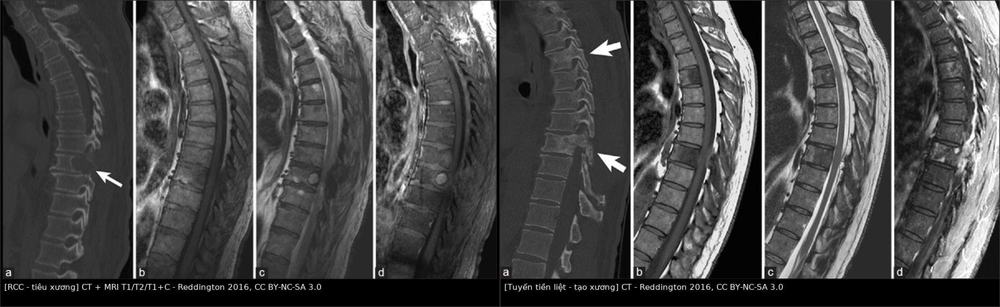
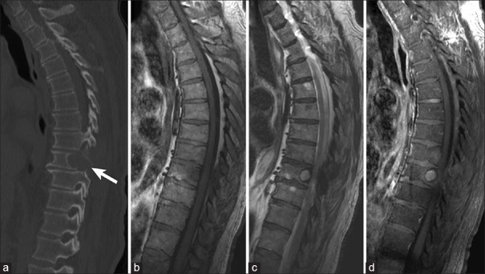
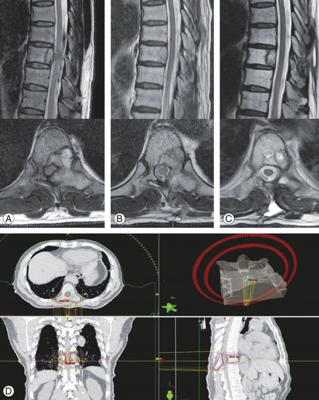

178 — Di căn xương của ung thư tế bào thận: chèn ép tủy, gãy xương bệnh lý & xử trí / RCC bone metastases: mechanical complications
Tags: pattern:di-can-xuong pattern:tieu-xuong pattern:chen-ep-tuy vung:xuong vung:cot-song score:Mirels score:SINS score:Bilsky protocol:MRI-cot-song protocol:SBRT incidentaloma:di-can-xuong
Mức chắc chắn (certainty): tổng hợp y văn (literature synthesis) — số liệu từ đoàn hệ 43 bệnh nhân di căn cột sống RCC (PMC8242338), 69 bệnh nhân phẫu thuật (PMC9600183), tổng quan hệ thống 63 nghiên cứu/1.968 bệnh nhân (PMC13586073), thử nghiệm RADICAL (PMC13489773) và các ca nguyên văn có ảnh CC BY-NC (PMC4879848, PMC7435309).
1. Tổng quan bệnh học – cơ chế hình ảnh
1.1. Vì sao RCC hay di căn xương — và vì sao "tiêu xương"
- Dịch tễ: RCC chiếm 2–3% ung thư người lớn; ~1/3 bệnh nhân đã có di căn lúc chẩn đoán, thêm 20–40% phát triển di căn sau cắt thận (PMC8242338). Xương là vị trí di căn phổ biến thứ hai sau phổi, và ~40% di căn xương nằm ở cột sống (PMC8242338). Khoảng 30% bệnh nhân RCC di căn (mRCC) có di căn xương (PMC13489773).
- TẠI SAO tiêu xương chứ không tạo xương: tế bào RCC tiết PTHrP, IL-6, VEGF và các yếu tố kích thích RANKL → tăng hoạt động hủy cốt bào (osteoclast); đồng thời ức chế tạo cốt bào (osteoblast). Kết quả là ổ tiêu xương (lytic) thuần, bờ có thể "nham nhở", vỏ xương bị phá (cortical destruction), mô mềm u lan ra ngoài.
- TẠI SAO RCC "giàu mạch" (hypervascular): VEGF do u tiết ra làm tăng sinh mạch máu; trên CT, u ngấm mạnh thì động mạch; khi sinh thiết/mổ có thể chảy máu nhiều — đây là lý do cân nhắc nút mạch trước mổ.
- TẠI SAO hay gây biến chứng cơ học: cột sống là nơi chịu tải; ổ tiêu xương làm thân đốt yếu, dễ sụp (collapse), bờ sau đẩy vào ống sống (retropulsion) → chèn ép tủy (metastatic spinal cord compression, MSCC). Ở xương dài (đùi, cánh tay), ổ tiêu xương làm gãy xương bệnh lý (pathological fracture).
- Triệu chứng: đau 37,5%, thiếu hụt thần kinh 36,0% trong tổng quan 1.968 bệnh nhân (PMC13586073). Đau kiểu đau cơ học tăng khi vận động/nằm, đau về đêm; thiếu hụt vận động là cấp cứu.
1.2. Vật lý hình ảnh — vì sao CT "thấy lỗ" và MRI "thấy thay tủy"
- CT: xương là mô có hệ số Hounsfield cao (xương đặc ~700–1.000 HU); ổ tiêu xương thay xương bằng mô mềm (20–60 HU) → vùng tối trong xương sáng. Tuy nhiên X-quang chỉ thấy khi mất 30–50% khoáng chất; CT phát hiện sớm hơn, đặc biệt với lát mỏng 1–2 mm và cửa sổ xương.
- MRI: tủy xương người trưởng thành 80% là mỡ → T1W sáng hơn cơ/đĩa đệm. U di căn thay tủy mỡ bằng tế bào/nước → T1W tối hơn cơ và tối hơn đĩa đệm (dấu hiệu "thay tủy thật"); T2W/STIR tăng tín hiệu vì nhiều nước/tế bào; T1W sau tiêm + fat-sat ngấm mạnh do u giàu mạch.
- TẠI SAO cần STIR/DWI: STIR triệt mỡ làm tổn thương phù/tế bào nổi bật; DWI hạn chế khuếch tán (ADC thấp) giúp phân biệt u đặc với tủy đỏ lành (tủy đỏ T1 ≥ cơ, ADC không thấp) và phù tủy (T1 ≥ cơ, STIR sáng nhưng không phá xương).
- Sau điều trị: vùng xơ/đặc xương (blastic) trên CT có thể là lành hóa, không phải tiến triển; ngược lại tiêu xương mới hoặc mô mềm mới là dấu hiệu tái phát.
1.3. Ngưỡng định lượng phải nhớ (cửa 1 Argon)
- Tiên lượng di căn cột sống RCC: sống trung bình 30 tháng nếu chỉ có di căn cột sống đơn độc, 19 tháng nếu nhiều ổ; cắt en-bloc 40,1 tháng so với 19,7 tháng khi cắt không en-bloc (PMC8242338). Sau mổ, OS 5 năm 31,2%, OS trung bình 34,7 tháng (PMC9600183).
- Xu hướng hiện đại: OS trung bình sau mổ cột sống 27 tháng (≥ 2017) so với 12,3 tháng (trước 2017); nhóm xạ trị 41,3 vs 10,8 tháng; nhóm toàn thân 29,0 vs 11,5 tháng (PMC13586073).
- Di căn xương làm tăng tử vong: ~2,5 lần tỷ lệ tử vong 5 năm so với RCC không di căn xương; SRE tăng có ý nghĩa (PMC12800899).
- Mirels (nguy cơ gãy xương dài): tổng 0–12 điểm; ≥ 9 điểm là ngưỡng cân nhắc cố định dự phòng (nguồn: "> 8 điểm được cân nhắc mổ", PMC10585877). Giá trị tiên đoán dương của Mirels thấp (10–32% ở xương đùi) nhưng NPV 90–100% (PMC12192531) — nghĩa là điểm thấp loại trừ khá tốt, điểm cao không chắc đã gãy.
- SINS (điểm bất ổn cột sống): 0–6 = vững, 7–12 = trung gian, ≥ 13 = mất vững (PMC10585877). SINS ≥ 7 là lý do hội chẩn cột sống.
- Bilsky/ESCC (mức chèn ép tủy): 0 = chỉ trong xương; 1a = mô u chạm màng cứng; 1b = chèn ép màng cứng nhưng không chạm tủy; 1c = chạm tủy; 2 = chèn ép tủy còn dịch não tủy; 3 = không còn dịch não tủy quanh tủy. Độ 2–3 là chỉ định can thiệp giải ép.
- Phẫu thuật tách ép (separation surgery): giải ép chu vi 2–3 mm quanh túi màng cứng, tạo "khoảng an toàn" để xạ SBRT/SRS liều phá huỷ; giới hạn liều tủy ~45–50 Gy (tương đương phân liều thường) (PMC12564190).
- SBRT: BED cao gấp ~3 lần xạ ngoài thường (cEBRT); kiểm soát tại chỗ 80–90% ở 1–2 năm với di căn xương RCC (PMC13586073; PMC12564190).
- Thuốc chống tiêu xương: denosumab 120 mg SC mỗi 4 tuần hoặc acid zoledronic 4 mg IV mỗi 4 tuần; bổ sung canxi 500–1.000 mg + vitamin D; theo dõi hoại tử xương hàm (ONJ) và hạ canxi. Trong đoàn hệ 247 bệnh nhân dùng denosumab, SRE 7,7%, can thiệp mổ 5,7% (PMC10585877).
- RADICAL (pha II): cabozantinib ± radium-223 ở mRCC có di căn xương dừng sớm vì vô hiệu; SSE-FS trung bình 16,7 vs 17,6 tháng (sHR 1,46; PMC13489773) → không thêm Ra-223 thường quy.
2. Mẫu hình + chẩn đoán phân biệt theo vị trí (gamut)
2.1. Mẫu hình cốt lõi — "ổ tiêu xương đơn độc/đa ổ ở người lớn"
- Mẫu hình RCC điển hình: ổ tiêu xương (lytic), bờ không đều, vỏ xương phá, mô mềm cạnh xương, phình xương (expansile), có thể "soap bubble", không vôi hóa; MRI T1 thấp, T2 cao, ngấm mạnh; thường ở thân đốt sống hoặc đầu xương dài.
- Vị trí quyết định biến chứng: cột sống → chèn ép tủy/mất vững; cổ xương đùi → gãy cổ xương đùi; xương cùng → đau/thần kinh; xương sườn → đau màng phổi; hàm → nhầm u nguyên phát/răng.
2.2. Gamut "ổ tiêu xương ở người lớn"
- Di căn RCC — tiêu xương, phình, giàu mạch, mô mềm, tiền sử cắt thận (có thể nhiều năm sau).
- Myeloma — nhiều ổ "đục lỗ" (punched-out), không viền xơ, không phình nhiều, tăng canxi máu, protein niệu Bence-Jones.
- Di căn tuyến giáp — tiêu xương phình mạnh ("blow-out"), có thể vôi hóa, giàu mạch, tiền sử tuyến giáp.
- Di căn phổi — tiêu xương ± tạo xương, thường có u phổi nguyên phát.
- Di căn vú — hỗn hợp tiêu + tạo xương, tiền sử vú.
- U máu xương (hemangioma) — dải xương song song ("corduroy"), T1/T2 sáng do mỡ, "polka-dot" trên axial, không phá vỏ.
- U nâu (brown tumor) — tiêu xương phình, người trẻ, tăng PTH, thường hàm/xương chậu/sườn.
- Viêm đốt sống–đĩa (spondylodiscitis) — đĩa đệm bị phá, T2 đĩa sáng, phù xương hai bên đốt, áp-xe cạnh sống.
- Paget xương — đốt to ra, vỏ dày, "picture frame", có thể "ivory vertebra"; phosphatase kiềm cao.
- Di căn tạo xương (prostate, breast) — đốt đặc trắng, không tiêu xương — cần phân biệt với lành hóa sau điều trị.
2.3. Phân biệt theo tuổi và bối cảnh
- < 40 tuổi: nghĩ u nâu (cường PTH), nhiễm trùng, u tế bào Langerhans, ABC; di căn ít gặp hơn.
- > 40 tuổi: di căn và myeloma đứng đầu; nếu nhiều ổ tiêu xương + tăng canxi → myeloma.
- Tiền sử ung thư: ổ xương mới ở bệnh nhân RCC mặc định là di căn cho đến khi chứng minh khác; nhưng vẫn phải loại trừ u nguyên phát xương và nhiễm trùng.
3. Bảng so sánh phân biệt (ma trận đối chiếu)
| Thực thể (entity) | Hình ảnh điển hình (CT/MRI) | Chốt vào (rule-in) | Chốt loại (rule-out) | Gợi ý xác nhận |
|---|---|---|---|---|
| Di căn RCC | Ổ tiêu xương phình, phá vỏ, mô mềm, ngấm mạnh; T1 thấp/T2 cao; có thể sụp đốt | Tiêu xương + phình + giàu mạch + tiền sử RCC | Vôi hóa dày đặc, không phá vỏ, T1 sáng do mỡ → không phải RCC | CT 3 thì; MRI T1/T2/STIR + T1+C; sinh thiết nếu chưa rõ |
| Myeloma | Nhiều ổ "đục lỗ", bờ rõ, không viền xơ, không phình nhiều; T1 thấp, T2 cao | Nhiều ổ + tăng canxi + thiếu máu + protein niệu | Một ổ đơn độc có phình/mô mềm lớn → ít nghĩ myeloma | Điện di protein huyết thanh/nước tiểu; sinh thiết tủy xương |
| Di căn tuyến giáp | Tiêu xương phình mạnh, bờ rõ, có thể vôi hóa, giàu mạch | Phình xương + vôi hóa + tiền sử tuyến giáp | Không vôi hóa, phá vỏ nham nhở → ít nghĩ | Siêu âm tuyến giáp; CT cổ; sinh thiết |
| U máu xương | Dải xương song song, T1/T2 sáng do mỡ, "polka-dot" axial; không phá vỏ | T1 sáng + dải xương + không mô mềm | T1 thấp, phá vỏ, mô mềm → không phải u máu | MRI không cản quang; CT thấy dải xương |
| U nâu (cường PTH) | Tiêu xương phình, bờ rõ, một/nhiều ổ, thường hàm/chậu; không mô mềm ác tính | PTH cao + canxi cao + người trẻ | PTH bình thường → loại u nâu | PTH, canxi, phospho; siêu âm tuyến cận giáp |
| Viêm đốt sống–đĩa | Đĩa đệm bị phá, T2 đĩa sáng, phù xương hai bên đốt, áp-xe cạnh sống | Phá đĩa + phù hai đốt + sốt/đau | Đĩa đệm còn nguyên, tổn thương chỉ trong thân đốt → ít nghĩ viêm | MRI + CRP/VS; cấy máu; sinh thiết |
| Paget xương | Đốt to, vỏ dày, "picture frame", có thể đặc ("ivory") | Xương to + vỏ dày + ALP cao | Xương không to, vỏ mỏng/phá → không phải Paget | X-quang/CT; ALP; scintigraphy |
| Di căn tạo xương (prostate/vú) | Đốt đặc trắng, không tiêu xương, bờ có thể không đều | Tiền sử prostate/vú + nhiều ổ đặc | Ổ tiêu xương/phình/mô mềm → không phải tạo xương đơn thuần | PSA; CT/MRI; sinh thiết |

Trái: RCC — ổ tiêu xương thân đốt (CT) + MRI T1/T2/T1+C. Phải: di căn tuyến tiền liệt — ổ tạo xương (CT). Nguồn: Reddington JA et al., Surg Neurol Int 2016, CC BY-NC-SA 3.0; ảnh ghép letterbox.3.1. Ba câu hỏi chốt trước khi kết luận
- Có phá vỏ/mô mềm không? Có → nghĩ ác tính (di căn/myeloma), không phải u máu hay loãng xương.
- Có mất vững hay chèn ép tủy không? Đo SINS, Bilsky, tìm sụp đốt, bờ sau, tín hiệu tủy.
- Có nguy cơ gãy xương dài không? Tính Mirels; ≥ 9 → hội chẩn chỉnh hình sớm.
4. Protocol chụp + hệ phân độ/điểm chuẩn hóa
4.1. Protocol chẩn đoán
- CT cột sống/xương: lát 1–2 mm, cửa sổ xương + mô mềm; toàn bộ cột sống nếu nghi đa ổ; cản quang thì động mạch để đánh giá mạch máu/độ giàu mạch trước can thiệp.
- MRI toàn bộ cột sống: T1W sagittal, T2W, STIR, T1W + gadolinium fat-sat, DWI; axial tại tầng tổn thương. Đánh giá: thay tủy, phá vỏ, mô mềm, chèn ép tủy (Bilsky), tín hiệu tủy (phù/myelomalacia), mất vững (SINS).
- X-quang: chỉ để đánh giá sụp đốt/gãy và theo dõi nhanh; không loại trừ di căn (độ nhạy thấp).
- PET/CT: dùng phân giai đoạn và tìm ổ khác; RCC có thể FDG âm giả (đặc biệt thể clear cell biệt hóa cao) → không dùng để loại trừ.
- Sinh thiết: khi chưa rõ nguyên phát, ổ đơn độc, hoặc cần xác định mô học trước điều trị toàn thân; CT-guided, tránh vùng hoại tử, chuẩn bị cầm máu vì RCC giàu mạch.
4.2. Hệ phân độ/điểm
| Hệ | Mục đích | Ngưỡng xử trí |
|---|---|---|
| Bilsky/ESCC 0–3 | Mức chèn ép tủy | 2–3 → giải ép (mổ/SBRT) khẩn |
| SINS 0–18 | Bất ổn cột sống | 0–6 vững; 7–12 trung gian (hội chẩn); ≥ 13 mất vững (can thiệp) |
| Mirels 0–12 | Nguy cơ gãy xương dài | ≥ 9 → cố định dự phòng; ≤ 8 theo dõi |
| Tokuhashi/Tomita | Tiên lượng sau mổ | Chọn mổ triệt để vs giảm đau |
| NOMS | Quyết định phối hợp | Neurologic, Oncologic, Mechanical, Systemic |
4.3. Flowchart xử trí di căn xương RCC
flowchart TD
A[Di căn xương RCC] --> B{Có chèn ép tủy /<br/>thiếu hụt thần kinh?}
B -->|Có| C[MRI khẩn + dexamethasone<br/>hội chẩn cột sống]
C --> D{Tiên lượng > 3 tháng<br/>và còn đi lại?}
D -->|Có| E[Giải ép / separation surgery<br/>± cố định + SBRT sau mổ]
D -->|Không| F[SBRT giảm đau<br/>± chăm sóc giảm nhẹ]
B -->|Không| G{SINS ≥ 7 hoặc<br/>Mirels ≥ 9?}
G -->|Có| H[Cố định / can thiệp dự phòng<br/>± nút mạch trước mổ]
G -->|Không| I{Đau / tiến triển?}
I -->|Có| J[SBRT ± thuốc chống tiêu xương<br/>± điều trị toàn thân]
I -->|Không| K[Theo dõi MRI/CT 3–6 tháng<br/>+ thuốc chống tiêu xương]
E --> L[Theo dõi: MRI 3 tháng<br/>rồi 3–6 tháng]
H --> L
J --> L
K --> L
4.4. Điều trị cụ thể
- Chèn ép tủy cấp: dexamethasone 16 mg/ngày (ví dụ 4 mg mỗi 6 giờ) ngay khi nghi ngờ; MRI khẩn; hội chẩn ngoại thần kinh/chỉnh hình và xạ trị.
- Mổ: giải ép + cố định khi mất vững (SINS ≥ 13), chèn ép nặng (Bilsky 2–3), đau do gãy/sụp, tiên lượng > 3 tháng; separation surgery (giải ép chu vi 2–3 mm) + SBRT sau mổ cho RCC (kháng xạ) — kiểm soát tại chỗ tốt hơn giải ép đơn thuần.
- Nút mạch trước mổ: với u giàu mạch, nút mạch 24–48 giờ trước phẫu thuật để giảm chảy máu; cân nhắc nguy cơ thiếu máu tủy nếu nút quá rộng.
- SBRT/SRS: chỉ định khi không mổ được, di căn ít ổ, sau separation surgery, hoặc đau do di căn; SRS 1 phân liều, SBRT 2–5 phân liều, BED cao gấp ~3 lần cEBRT; kiểm soát tại chỗ 80–90% (PMC13586073, PMC12564190).
- Thuốc chống tiêu xương: denosumab 120 mg SC q4w hoặc zoledronic acid 4 mg IV q4w; bổ sung canxi/vitamin D; theo dõi ONJ (khám răng trước điều trị) và hạ canxi. Denosumab có thể cải thiện sống 5 năm so với bisphosphonate trong phân tích hồi cứu lớn (PMC12800899).
- Toàn thân: TKI (sunitinib, pazopanib, cabozantinib) hoặc ức chế miễn dịch (nivolumab + ipilimumab) tùy tuyến; radium-223 không có lợi khi phối với cabozantinib (RADICAL, PMC13489773).
- Giảm đau: xạ ngoài thường 8 Gy × 1 hoặc 20 Gy/5 cho giảm đau nhanh; SBRT khi cần kiểm soát lâu dài.
4.5. Theo dõi sau điều trị
- MRI/CT tại 3 tháng, sau đó 3–6 tháng tùy nguy cơ; so sánh cùng chuỗi xung, cùng mặt phẳng.
- Đánh giá đáp ứng: RECIST 1.1 cho tổn thương mô mềm; thay đổi xương (blastic) có thể là lành hóa, không tính là tiến triển nếu không có mô mềm mới.
- Theo dõi biến chứng: đau mới, yếu chi mới → MRI khẩn; theo dõi ONJ, hạ canxi, suy thận khi dùng thuốc chống tiêu xương.
5. Biến thể bình thường và cạm bẫy
- X-quang bình thường không loại trừ di căn: phải mất 30–50% khoáng chất mới thấy; đau xương + X-quang bình thường vẫn cần MRI.
- "Đặc xương" sau điều trị: vùng xơ hóa/blastic sau xạ/hóa trị là lành hóa, đừng gọi tiến triển; ngược lại tiêu xương mới hoặc mô mềm mới mới là tái phát.
- U máu xương: T1 sáng do mỡ, dải xương song song, không phá vỏ — đừng sinh thiết/cắt oan.
- Paget: đốt to ra, vỏ dày, "picture frame" — khác di căn tạo xương (đốt không to).
- U nâu: người trẻ, PTH cao, nhiều ổ — hỏi kỹ cường tuyến cận giáp trước khi gọi "di căn".
- Viêm đốt sống–đĩa: đĩa đệm bị phá là chốt; di căn thường chừa đĩa (nhưng có thể lan vào đĩa khi muộn).
- Bỏ sót chèn ép tủy trên CT: CT chỉ thấy xương; MRI mới đánh giá tủy/màng cứng — bệnh nhân yếu chi phải chụp MRI.
- Bỏ sót tổn thương bờ sau/ cuống sống: làm SINS tăng và nguy cơ mất vững; đọc axial từng tầng.
- Sinh thiết u giàu mạch: nguy cơ chảy máu; cân nhắc nút mạch/chuẩn bị trước.
- Artifact: xi măng, nẹp, kim loại gây giả ảnh trên CT/MRI; so phim không cản quang và nhiều chuỗi xung.
6. Tự lượng giá — Blind Quiz
Ca 1 — Nam 78 tuổi, tiền sử cắt thận vì RCC 6 năm, đau lưng tăng dần. CT + MRI cột sống.

- Gợi ý lâm sàng: không sốt, không chấn thương; xét nghiệm canxi bình thường.
- Câu hỏi: (1) Mô tả tổn thương trên CT và MRI? (2) Chẩn đoán? (3) Cần đánh giá thêm gì trước khi quyết định mổ?
Bấm để hiện đáp án (findings + chẩn đoán)
- Findings: (a) CT sagittal: ổ tiêu xương thân đốt giữa ngực, phá vỏ, không viền xơ; (b–d) MRI: T1 thấp, T2/STIR cao, ngấm mạnh sau tiêm; không có mô mềm lớn ra ngoài.
- Chẩn đoán: di căn xương RCC (lytic, hypervascular) — phù hợp tiền sử và hình ảnh.
- Cần đánh giá thêm: Bilsky (chèn ép tủy), SINS (mất vững), Mirels nếu xương dài; MRI toàn bộ cột sống tìm ổ khác; CT ngực/bụng phân giai đoạn; cân nhắc nút mạch trước mổ.
- Nguồn ảnh: Reddington JA et al., Surg Neurol Int 2016 (PMC4879848), Fig. 1; CC BY-NC-SA 3.0.
Ca 2 — Nam 68 tuổi, di căn RCC T9, yếu hai chân 2 ngày. MRI cột sống ngực.

- Gợi ý lâm sàng: đau ngực lưng, yếu chi dưới, bí tiểu nhẹ; không sốt.
- Câu hỏi: (1) Mức chèn ép tủy theo Bilsky? (2) SINS ước lượng? (3) Hướng xử trí?
Bấm để hiện đáp án (findings + chẩn đoán)
- Findings: (A) MRI sagittal T2: khối mô mềm sau thân đốt T9 đẩy vào ống sống, chèn ép tủy; (B) axial: tổn thương xâm lấn bờ sau/ cuống sống; (C) sau mổ: giải ép, tủy trở về; hình D là kế hoạch xạ trị.
- Chẩn đoán: di căn RCC cột sống gây chèn ép tủy (Bilsky 2–3) + mất vững (SINS cao do tổn thương bờ sau).
- Xử trí: dexamethasone + MRI khẩn + hội chẩn; nếu tiên lượng > 3 tháng → giải ép/separation surgery + cố định + SBRT; nút mạch trước mổ nếu u giàu mạch.
- Nguồn ảnh: Chang SY et al., Asian Spine J 2020 (PMC7435309), Fig. 1; CC BY-NC 4.0.
Ca 3 — Hai bệnh nhân: một tiêu xương, một tạo xương. Nhìn ảnh ghép, phân biệt trước khi mở đáp án.
- Gợi ý lâm sàng: bên trái có tiền sử RCC; bên phải có tiền sử ung thư tuyến tiền liệt.
- Câu hỏi: (1) Bên nào là tiêu xương, bên nào tạo xương? (2) Vì sao RCC tiêu xương còn prostate tạo xương? (3) Ý nghĩa với nguy cơ gãy xương?
Bấm để hiện đáp án (findings + chẩn đoán)
- Findings: trái = RCC, tiêu xương (vùng tối trong thân đốt, phá vỏ); phải = prostate, tạo xương (đốt đặc trắng, dày xương).
- Vì sao: RCC tiết PTHrP/IL-6/VEGF → tăng hủy cốt bào, ức chế tạo cốt bào → tiêu xương; prostate tiết yếu tố tạo xương (BMP, endothelin-1) → tạo xương.
- Ý nghĩa: tiêu xương làm yếu cấu trúc → nguy cơ gãy/sụp cao hơn; cần Mirels/SINS và thuốc chống tiêu xương; tạo xương thường đau do xương đặc nhưng ít gãy hơn.
- Nguồn ảnh: Reddington JA et al., Surg Neurol Int 2016 (PMC4879848), Fig. 1 + Fig. 2; CC BY-NC-SA 3.0; ảnh ghép letterbox.
Bài liên quan chéo
- 154 – RCC di căn & theo dõi sau cắt thận
- 151 – U thận đặc: RCC vs oncocytoma vs AML
- 581 – Di căn não & xương trong ung thư phụ khoa: Mirels, SRS
- 228 – Thoát vị đĩa đệm & phân độ Pfirrmann/Modic
- 199 – Quy trình xét nghiệm gen & tầm soát gia đình
Ảnh
178_di-can-xuong-RCC_CT-MRI_PMC4879848-Fig1-CCBYNCSA.jpg— CT + MRI ổ tiêu xương RCC (PMC4879848, Fig. 1), CC BY-NC-SA 3.0.178_di-can-cot-song-RCC_MRI_PMC7435309-Fig1-CCBYNC.jpg— MRI chèn ép tủy + kế hoạch xạ (PMC7435309, Fig. 1), CC BY-NC 4.0.composite_178_lytic-vs-blastic.jpg— ảnh ghép tiêu xương (RCC) vs tạo xương (prostate), từ PMC4879848 Fig. 1 + Fig. 2, CC BY-NC-SA 3.0.- Nguồn + giấy phép từng ảnh:
images/CREDITS.md.
Không dùng để chẩn đoán độc lập khi chưa có người hướng dẫn.